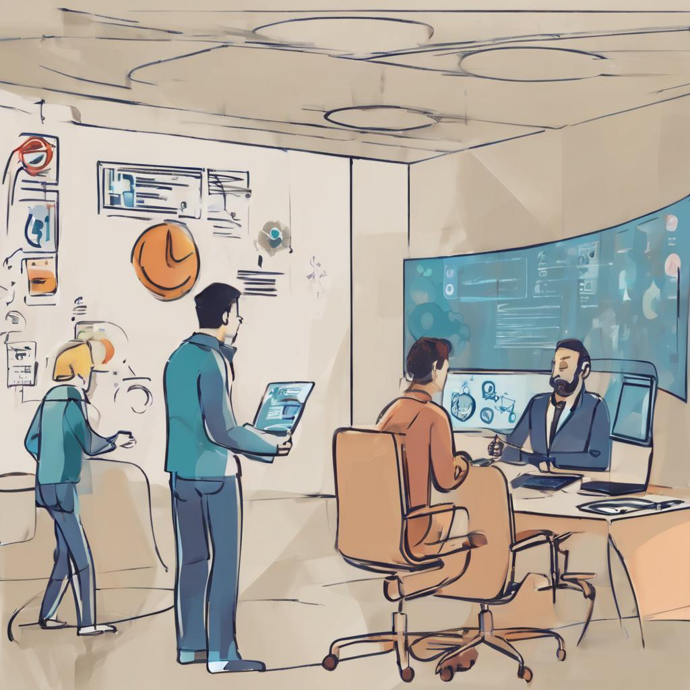

Usabilidad y Accesibilidad
La usabilidad y la accesibilidad son dos conceptos interrelacionados pero distintos. Mientras que la usabilidad se centra en la facilidad de uso y la eficiencia de la interacción, la accesibilidad se refiere a la capacidad de un sistema o producto para ser utilizado por personas con diferentes capacidades y discapacidades (González-Abraldes et al., 2010). Ambos aspectos son importantes para garantizar una experiencia inclusiva y satisfactoria para todos los usuarios.
Cómo la Accesibilidad Puede Mejorar la Usabilidad:
La inclusión de principios de accesibilidad en el diseño de productos puede mejorar significativamente su usabilidad en general. Aquí hay algunas formas en que la accesibilidad puede contribuir a una mejor usabilidad:
- Claridad y Consistencia: Las pautas de accesibilidad suelen enfatizar la necesidad de una presentación clara y consistente de la información, lo que beneficia a todos los usuarios al hacer que la navegación y la comprensión sean más fáciles.
- Facilidad de Navegación: Las mejoras de accesibilidad a menudo se traducen en una navegación más lógica y estructurada, lo que facilita que los usuarios encuentren lo que buscan de manera más rápida y sencilla.
- Adaptabilidad: Los ajustes de accesibilidad, como el cambio de tamaño de texto y el contraste, pueden adaptarse a las preferencias individuales de los usuarios, lo que mejora la experiencia personalizada.
- Compatibilidad con Dispositivos y Tecnologías Asistenciales: Los productos accesibles suelen ser más compatibles con tecnologías asistenciales, como lectores de pantalla o dispositivos de entrada alternativos, lo que amplía su accesibilidad para usuarios con discapacidades.
Cómo Diseñar Productos Accesibles:
Para diseñar productos que sean tanto usables como accesibles, los profesionales deben considerar lo siguiente:
- Conocer las Pautas de Accesibilidad: Familiarizarse con las pautas de accesibilidad web, como las Directrices de Accesibilidad para el Contenido Web (WCAG), es esencial para diseñar productos accesibles.
- Pruebas con Usuarios Reales: Involucrar a usuarios con discapacidades en las pruebas de usabilidad y accesibilidad ayuda a identificar problemas específicos y a obtener retroalimentación valiosa.
- Diseño Universal: Adoptar un enfoque de diseño universal implica crear productos que sean intuitivos y utilizables para la mayor cantidad posible de personas desde el principio.
- Capacitación y Sensibilización: Capacitar al equipo de diseño y desarrollo en temas de accesibilidad y sensibilización hacia las discapacidades puede promover la inclusión desde el inicio del proceso de diseño.